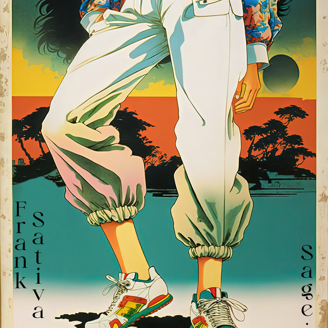
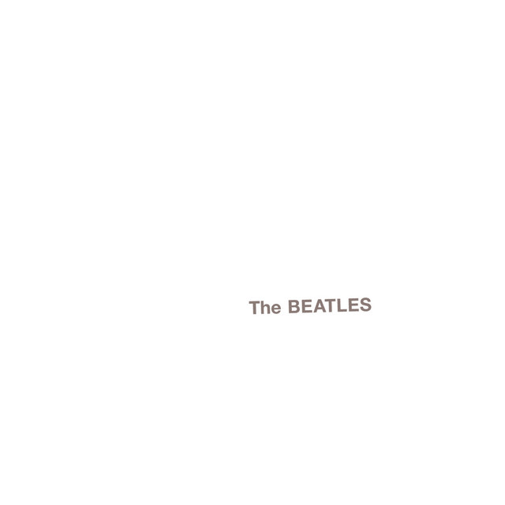
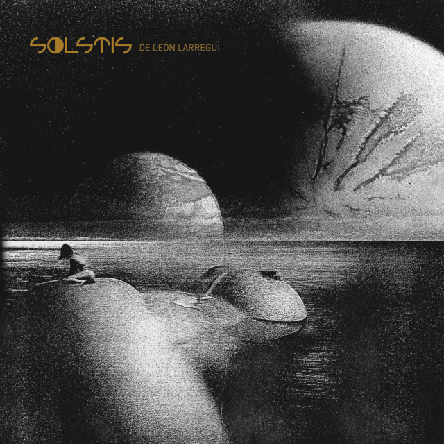
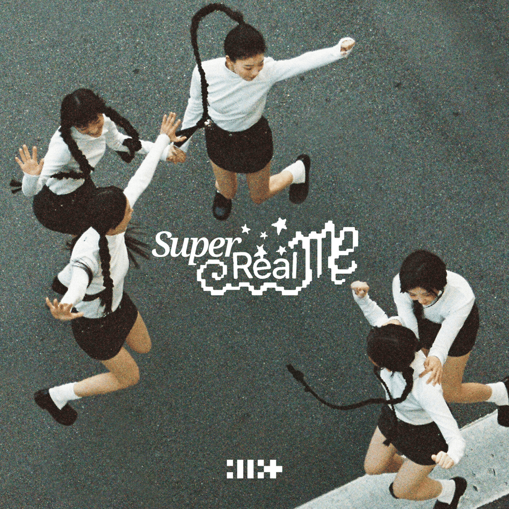

Some by Steve Lacy......1:58
Some by Steve Lacy......1:58
I Think I Left the Stove On by Hotel Ugly......3:22
Some by Steve Lacy......1:58
 HOPE YOU FEEL by Sage., Frank Sativa......2:29
 Sugar by Men I Trust......2:56
Sugar by Men I Trust......2:56

Ojitos Lindos by Bad Bunny, Buscabulla......4:04
 Everything I Want by beabadoobee......3:10
Everything I Want by beabadoobee......3:10
 I Will - Remastered 2009 by The Beatles......1:45
 Brillas by Leon Larregui......3:44
Collision by Stray Kids......2:34
 Lucky Girl Syndrome by ILLIT......2:19
9 and Three Quarters (Run Away) by TXT......3:31
2 Baddies by NCT 127......3:50
Tierra by Chuwi......3:24
 CAFe CON RON by Bad Bunny, Los Pleneros de la Cresta
......3:48
CAFe CON RON by Bad Bunny, Los Pleneros de la Cresta
......3:48
Amante Luz by Cultura Profetica......5:09
Salimos de Aqui by Fiel A La Vega......6:33